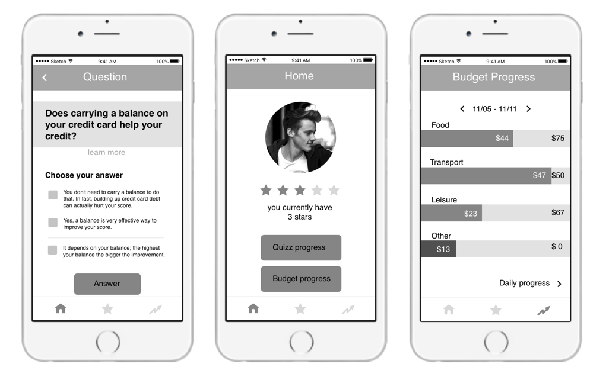
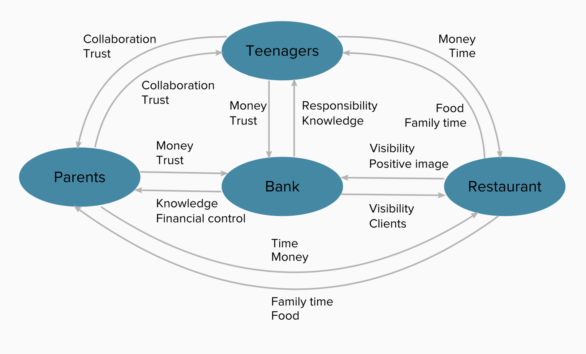

PNC Bank - Financial education for teens
Studies show that the great majority of teenagers in the USA are not financially literate and that 79 % of those aged 16-22 admitted they have never attended a class on finance. Reports on student debts, on the other hand, indicate that they have increased by 58% from 1997 to 2007. With that in mind, this PNC Bank sponsored project aims at making teenagers more financially educated while simultaneously attracting new clients to the bank. To that end our team produced a tool that stimulates financially oriented communication between teenagers and their parents, while teaching them basic finance principles.

PROJECT BREAKDOWN
Scope
8 weeks
5 person team
My roles
UX Researcher
UX Designer
Skills
Scenarios
Personas
Storyboarding
Speed Dating
Prototyping
Tools
Illustrator
Paper + Pencil
Sketch
Money Muscle
Directly geared into improving teenagers' financial education level, our final solution is an app called MoneyMuscle. It should be offered free of charge by the bank and is intended to be used by both teens and parents through a joint account. MoneyMuscle's basic idea is to stimulate teens and parents to answer financial questions or to set up budget goals for the week to earn stars that translate into an opportunity to earn a discount at participating restaurants.
Money Muscle is able to engage teenagers in finance, an extremely important part of an adult's daily life but of little concern to a teenager. It also opens up a dialog channel between teens and parents on a subject that should concern both.
Research 
Competitive analysis
The team conducted online secondary research, by doing a competitive analysis and literature review. We were able to identify the main solutions proposed by other banks and after acquiring some knowledge on the theme, interviewed teenagers to learn more about their money habits and overall financial knowledge.

Stakeholder models
We created a stakeholder model, showing all entities that could educate teens on financial matters. We also identified that the specific group of "earning teenagers", composed by working teenagers or teens who receive money as gift, was not specifically targeted by PNC competitors.

Ideation 
Current State Model
The team then created a current state model mapping which entities influence earning teens spending habits. We couldn't find a direct link between teenagers and banks, because most teenagers don't have bank accounts. Based on that, one goal became to establish that connection.
Personas
Next, the team created personas representing a teenager, a parent and a banker; all the main agents involved in our product. That helped us to better analyze our users' and stakeholders' main needs and goals.

Felix the teen

Marcia the mom
Sara the banker
Felix is 16 years old high school student who receives a weekly allowance from his parents during the school year and works during the summer break. His dream is going to college, but his financial short-term goals discourage him to keep his discipline in saving up money for that.
Marcia is a 55 years old mom of 3 children. She would like her kids to be more interested and knowledgeable in financial matters. She gives her kids weekly allowance but is not sure if this is the best practice for making them more money conscious.
Sara works as a financial advisor in the student banking division of a bank. She noticed that many of the bank`s competitors provide similar student banking services so she wants to create a unique strategy to differentiate her bank from others.
How Might We...
We the decided to do a Design Sprint to quickly brainstorm solutions. We firstly identified pain points on the current state Value Flow Diagram and based on them created How Might We... statements that articulated the problem space we then used to drive our service design development. We continued by affinity grouping How Might We... statements and then voted problem spaces that were in line with our earlier research.

Crazy 8's
Focusing on the chosen problem space, we brainstormed concepts by using the Crazy 8's method which helped us generate over 30 concepts in under 30 minutes. Again, we affinity grouped our concepts and identified each Pro, Con and Opportunity spaces likely to come up if we decide to develop the idea further. Lastly, we chose the top three concepts which we considered had the largest space to develop: Game-Based Solution, Goal-Based Solution and Collaboration-Based Solution.

Storyboards
We then generated 9 different storyboards from the 3 most promising ideas we created for each of our 3 selected concepts.

Iteration 
Speed Dating
The team conducted speed dating sessions with 6 teenagers and 2 parents, showing them the 9 previously developed storyboards. We wanted to see their emotional reactions to our ideas and also identify if users would feel a need for our solutions.

Low-Fidelity Prototype
We used the speed dating findings to adapt our most promising idea, which consisted of setting weekly goals, by adding restaurants discounts as reward and stimulating collaboration between parents and teens, keeping their spendings private but targeting a dialog between both. I created a paper-prototype to quickly test the users' interaction with our product.

Medium-Fidelity Prototype
After adjusting our prototype based on the received critique I then created a medium-fidelity prototype to play with colors and better visualize the app interactions. I chose to use shades of orange and blue to match with PNC's colors.

Grayscale Wireframes
After receiving positive feedback on this design, I moved on to creating medium-fidelity grayscale wireframes using sketch.
Final thoughts
Discounts at restaurants positively reinforce learning and provide a delightful experience for both teens and parents as they have the chance to save money while fostering communication about financial topics in a fun way. By tying learning and rewards together the bank is associated with an enjoyable moment when users earn discounts at restaurants. The bank is also able to teach clients financial concepts that are aligned with their business goals. In addition, it generates cross selling, which allows the bank to profit from their users. Finally, marketing exposure may increase number of customers, while teaching teenagers financial concepts in a trustworthy and effective way.
